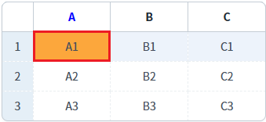
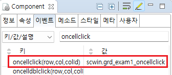

GridView의 'oncellclick' 이벤트를 설정한 예제입니다. 이 이벤트는 Body영역의 셀이 클릭된 경우 발생합니다. 이벤트 핸들러에서 클릭된 셀의 'row index', 'column index', 'column id'를 확인할 수 있습니다.
oncellclick 이벤트 발생 시 로그 출력하기
1
STEP 1: 첫 번째 행의 'A' 컬럼의 셀을 클릭합니다.
Image 1.브라우저(Chrome) 실행 예시

2
STEP 2: 실행 결과를 확인합니다.
oncellclick 이벤트가 발생되고 핸들러가 실행되어 로그가 출력됩니다.
예제 영역 '로그 확인' 또는 브라우저의 개발자 도구의 콘솔(console)탭에 출력된 로그를 확인합니다.
Example 1.Log
[14:27:28] ** scwin.grd_exam1_oncellclick **
row index : 0
column index : 0
column id : col_a
[14:27:28] JSON Data : {"col_a":"A1","col_b":"B1","col_c":"C1","rowStatus":"R"}1
STEP 1: GridView의 oncellclick 이벤트 핸들러를 설정합니다.
예제 파일에서는 핸들러로 사용할 메소드명을 'scwin.grd_exam1_oncellclick'으로 설정하였습니다.
Image 2.웹스퀘어 스튜디오의 Component View - 이벤트 설정 예시

Example 2.Source
<!-- gridView 의 소스 본문 예시 --> <w2:gridView ev:oncellclick="scwin.grd_exam1_oncellclick" id="grd_exam1"> <!-- 중략 --> </w2:gridView>
2
STEP 2: 'scwin.grd_exam1_oncellclick' 핸들러를 정의합니다.
Example 3.Script
//GridView grd_exam1의 oncellclick 이벤트 핸들러 scwin.grd_exam1_oncellclick = function (row, col, colId) { //console에 log 출력 console.log(row, col, colId); //컬럼별 로직 구현 예시 - 'A' 컬럼을 클릭한 경우 현재 행의 데이터를 JSON으로 출력 switch (colId) { case "col_a": //연결된 DataList를 모르는 경우 //let jsnRowData = $p.getComponentById(this.getDataList()).getRowJSON(row); //연결된 DataList를 아는 경우 let jsnRowData = dlt_books_1.getRowJSON(row); //console에 log 출력 console.log(jsnRowData); break; case "col_b": break; case "col_c": break; default: break; } };
oncellclick
[DataList] getRowJSON